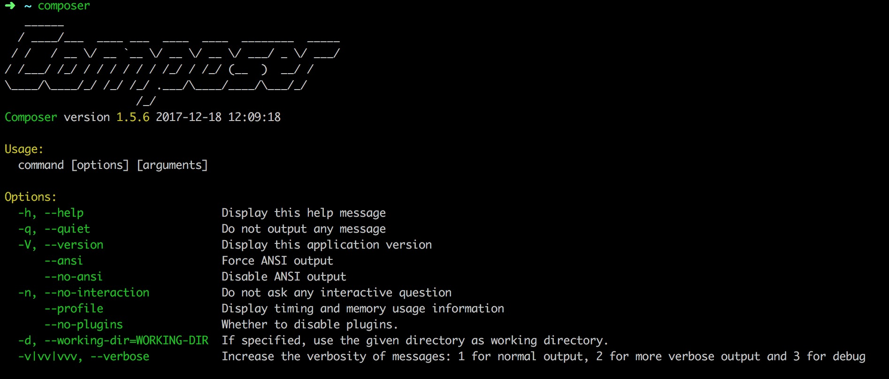
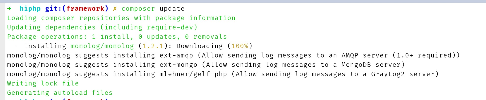
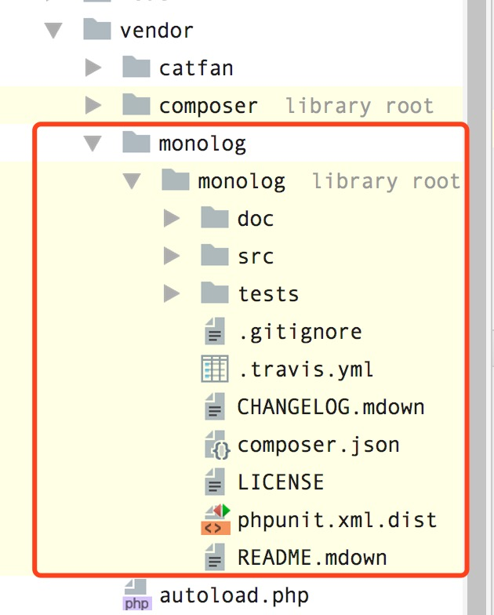
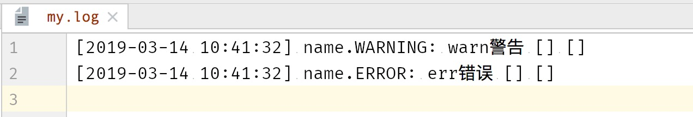
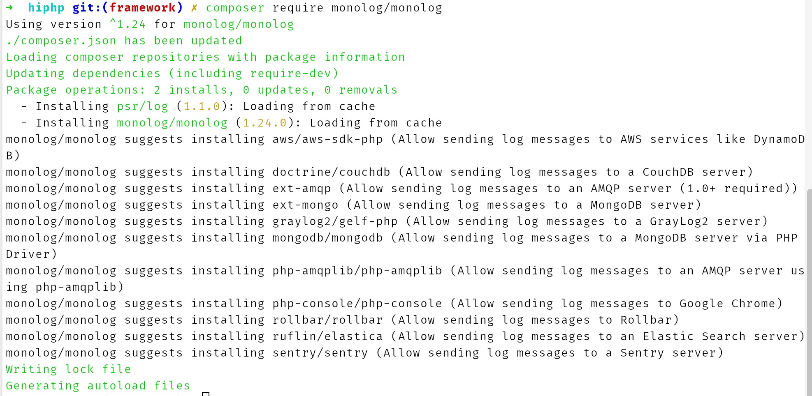

composer是php的一个依赖管理工具,在项目中声明所依赖的外部工具库，会自动安装这些工具库及所依赖的库文件。
对我等初阶工程狮来说，就是拉别人的代码，用别人的库，一个进阶版的cp命令 <(￣︶￣)>
curl -sS https://getcomposer.org/installer | php 然后当前文件夹下应该会有一个composer.phar文件，然后把它放到全局路径里或者在PATH里加入它的位置
mv composer.phar /usr/local/bin/composerwindows用户添加到环境变量里的PATH中
不会的这里有百度经验 https://jingyan.baidu.com/article/8ebacdf02d3c2949f65cd5d0.html
运行命令看看安装成功没有
composer --versio
//输出： Composer version 1.5.6 2017-12-18 12:09:18
//输出这种样子的就是成功了也可以看个图，直接运行 composer命令：
composer
{
"name": "HiPHP",
"description": "hi world",
"type": "Framework",
"keywords": [
"PHP",
"PHP FRAMEWORK"
],
"require": {
"php": ">5.3.0",
"catfan/Medoo": "*",
"monolog/monolog": "1.2.*"
},
"repositories": {
"packagist": {
"type": "composer",
"url": "https://packagist.phpcomposer.com"
}
}
}国内的镜像服务，由于众所周知的原因，使用国外的会很慢很卡，具体方法查看composer国内镜像的官网介绍。 https://pkg.phpcomposer.com/
搞个例子，我们还缺少一个正式的日志功能，php有个很牛x的开源日志库，我们这就使用composer把他加载进来。（开源就是光明正大让你copy过来的写好了的代码，然而cp太麻烦，于是大佬们就发明了composer一次行复制过来）。
这是github地址
https://github.com/Seldaek/monolog
这是是我们之前 composer.json 文件中requeire部分
"require": {
"php": ">5.3.0",
"catfan/Medoo": "*"
},现在加上monolog的部分
"require": {
"php": ">5.3.0",
"catfan/Medoo": "*",
"monolog/monolog": "1.2.*"
},然后我们执行 composer update

打印出来的数据没问题，我们去看看vender里的文件，多了这么一个monolog的文件夹。

现在我们在代码里测试一下,这是修改之后的testCtrl控制器
namespace controller;
use Monolog\Logger;
use Monolog\Handler\StreamHandler;
class testCtrl
{
public function index()
{
$log = new Logger('name');
$log->pushHandler(new StreamHandler('my.log', Logger::WARNING));
$log->warn('warn警告');
$log->err('err错误');
}
}运行之后根目录下多出来一个文件，my.log，打开里边有这样的内容。

还可以直接跑命令composer require。
比如我们还是添加这个monolog库，把我们刚才修改的composer.json文件里的引入monolog的这一行删除掉，然后运行 composer update，会发现刚才自动下载的monolog文件夹消失了，回到了最初的状态。
然后我们运行
composer require monolog/monolog看输出：

看看composer.json文件，发现已经多出了一行
"monolog/monolog": "^1.24"版本详细到了1.24，比我们最开始指定的要详细一些，文件夹也出来了，代码也可以正常调用。
看一下我们的composer.lock,这是个运行了composer install或者update之后就存在的文件。
composer.json是用来配置我们要引入的库，那这个composer.lock是用来干嘛的呢？答案是，用来精确指定版本。
比如我们一开始手动添加版本的时候，添加的是1.2.*,这样我们在拉取的时候，可能会拉去1.2.1或者1.2.4，但加入他官方的版本升级了，之后使用这个项目的人，install的时候拉去的可能就是1.2.5了，说不定有一些不兼容的问题。于是compsoer便设计了一个lock文件，lock文件里会有完整的包信息和版本号。
关于compser.lock的具体情景：
composer installcomposer updatecomposer require 库名 [版本] 引入新库或者修改原来库版本composer selfupdate composer自身更新composer self-update --rollback 更新之后回退到上次的版本composer create-project 从现有的包里创建一个新的项目 如：composer create-project topthink/think=5.0.* tp5 --prefer-dist 就可以直接下载一个thinkphp5.0的代码composer search 包名 比如 composer search monolog就可以搜索composer的官方网站 https://packagist.org/ 上的有的包composer config composer配置命令，比如全局设置composer的国内镜像 composer config -g repo.packagist composer https://packagist.phpcomposer.com